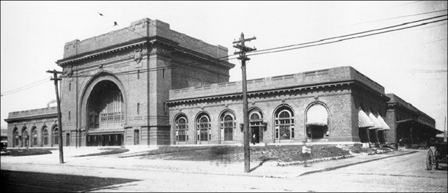
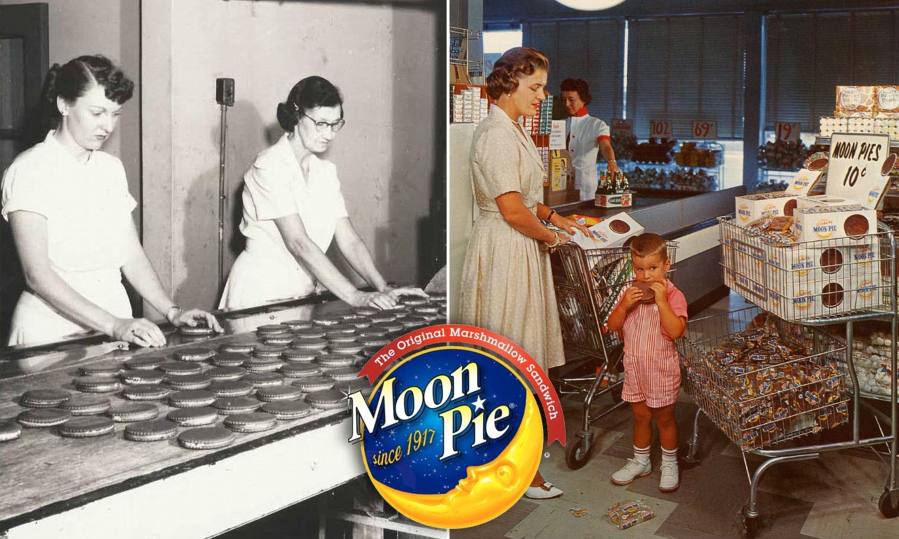

Chattanooga's History
Chattanooga, located in southeastern Tennessee, is a city rich in history and natural beauty. From its early industrial roots to its current position as a leader in innovation, Chattanooga offers a unique blend of old and new.
Chattanooga was established in 1838 as a small trading post called "Ross’s Landing," named after Major John Ross, the Cherokee Chief. It became a key transportation hub due to its location at the confluence of the Tennessee River and several important Native American trade routes.
In recent decades, Chattanooga has undergone a significant transformation. The city has worked to clean up pollution, revitalize its riverfront, and attract a diverse range of industries, including technology and green energy. It is now a recognized leader in sustainability and innovation, earning the title of "Gig City" after becoming the first city in the U.S. to offer high-speed fiber-optic internet.
Fun Facts
Home of the First Coca-Cola Bottling Plant
Coca-ColaThe first-ever Coca-Cola bottling plant was founded in Chattanooga in 1899 by local businessman Joseph Biedenharn. The plant is still in operation today, and visitors can learn about the history of this iconic beverage.
Chattanooga Choo Choo
The famous song "Chattanooga Choo Choo" made the city's name known worldwide. The song, performed by Glenn Miller, became a hit in 1941, and the Chattanooga Choo Choo is also the name of a historic hotel located in a converted train station.
ChooChoo The Moon Pie
The iconic Moon Pie, a marshmallow-filled snack, is a favorite in Chattanooga. The company that makes Moon Pies, Chattanooga Bakery, has been in operation since 1902, and the treat is closely associated with local culture.
GeneralStore 